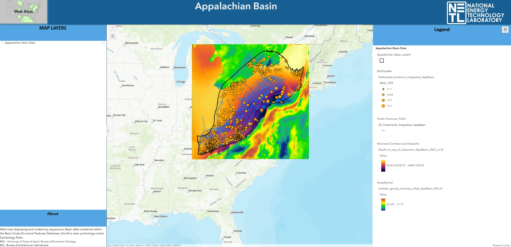
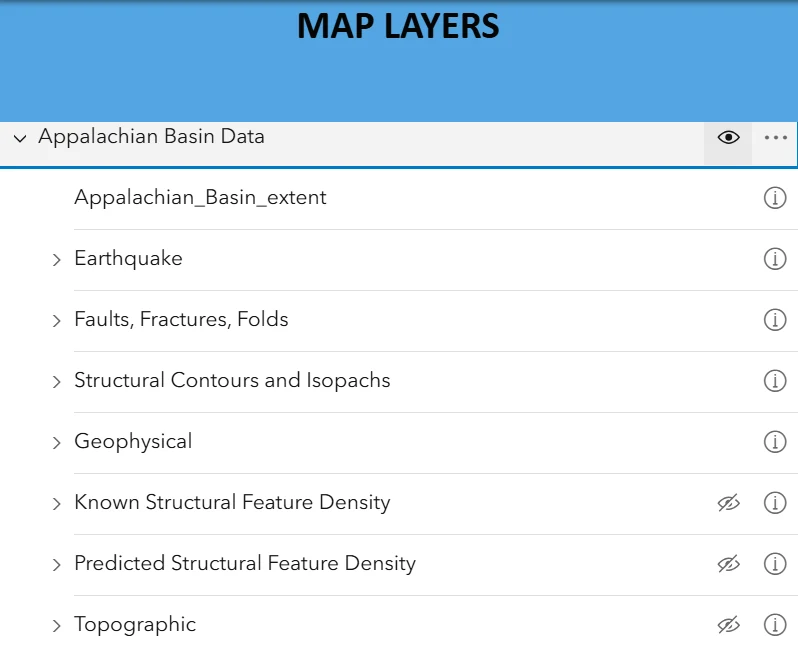
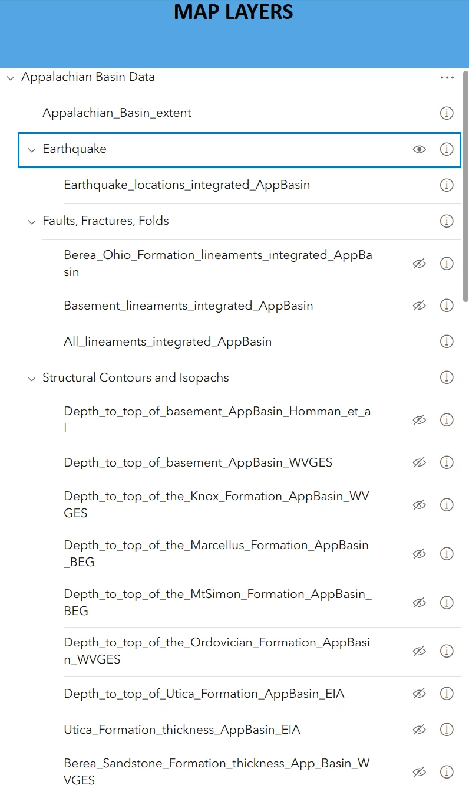

PROJECT CASE STUDY
Carbon Storage Atlas
Automating the conversion of hundreds of geologic raster datasets into vector layers for publication through ArcGIS Online and the NETL interactive atlas.
01Project summaryScope and context
02MethodologyPython automation · Raster-to-vector · AGOL
I developed a Python automation workflow to process more than 400 geologic raster files and convert them into vector polygon files. Instead of manually converting each raster, I used a repeatable process to extract the spatial information and prepare the resulting vector datasets for upload into ArcGIS Online (AGOL). Those datasets could then be used as layers in the NETL interactive atlas. My main contribution was automating the raster-to-vector processing and preparing the outputs for web-based GIS visualization. The original processing scripts are not publicly available.
03FiguresProject visual



PROJECT TAKEAWAYS
Why This Project Matters
Making geologic information accessible
Practical and scientific value
Converting hundreds of geologic raster layers into usable spatial products helps turn fragmented subsurface information into maps that researchers and stakeholders can explore. Publishing those outputs through ArcGIS Enterprise and a public-facing application improves access to information relevant to carbon-storage assessment.
What it demonstrates as a data scientist
This project strengthened my ability to automate raster-to-vector processing, manage large geospatial collections, check spatial consistency and deliver data through GIS services. It connects Python-based data engineering with the practical challenge of making scientific outputs accessible to non-programmers.